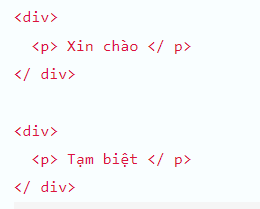
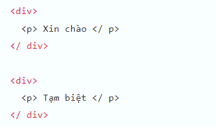
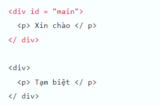
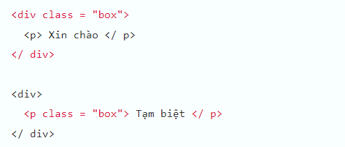
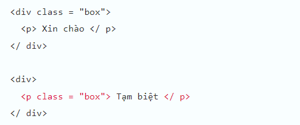
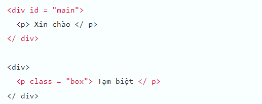
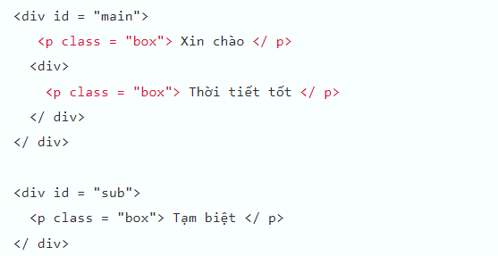
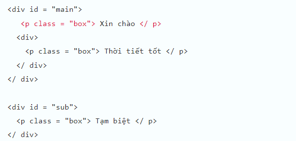
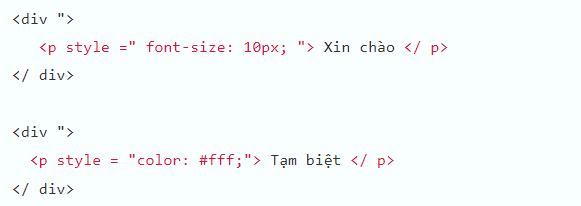

Cùng tìm hiểu về CSS selectors trong JavaScript. Bạn sẽ biết khái niệm CSS selectors trong JavaScript là gì cũng như cách sử dụng nó trong bài học này.
CSS selectors được sử dụng như là đối số của các phương thức querySelector và querySelectorAll. Xem thêm:
CSS selectors trong JavaScript là gì
Chúng ta đều biết CSS(Cascading Style Sheet) là một ngôn ngữ được sử dụng để tìm và định dạng các element được tạo ra bởi các ngôn ngữ HTML. Trong JavaScript, chúng ta có thể tìm các element và sau đó sử dụng các thuộc tính và phương thức để trực tiếp thay đôi các định dạng này, bằng cách sử dụng tới CSS selectors.
CSS selectors trong JavaScript có nghĩa là bộ chọn CSS, là một phương pháp dùng để xác định các phần tử (element) trong DOM áp dụng một bộ quy tắc CSS nào đó. CSS selectors thường được sử dụng như là đối số trong phương thức querySelector và querySelectorAll để lấy các element trong DOM thoả mãn một bộ quy tắc CSS chỉ định.
Các bạn biết tiếng Anh có thể tìm thêm về CSS selectors tại document chính thức sau:
developer.mozilla.org
Các loại CSS selectors trong JavaScript và cách dùng
CSS selectors trong JavaScript được chia thành 5 nhóm lớn như sau:
- Basic CSS Selectors
- Grouping selectors
- Combinators
- Pseudo
- Specifications
Ngoài ra, dựa theo cách sử dụng cụ thể mà chúng ta cũng có thể chia CSS Selectors thành 9 kiểu như sau:
Chỉ định toàn bộ element
Để chỉ định toàn bộ element chúng ta dùng ký tự * và dùng querySelectorAll để lấy toàn bộ element trong DOM như ví dụ sau:
let elements = document.querySelectorAll('*'); |

Chỉ định thuộc tính tagname
Để chỉ định tagname, ví dụ như là p, div hay h2 chẳng hạn, chúng ta viết trực tiếp giá trị thuộc tính tagname và dùng querySelectorAll để lấy toàn bộ element được chỉ định như ví dụ sau:
let elements = document.querySelectorAll('div'); |

Chỉ định thuộc tính id
Để chỉ định thuộc tính id, chúng ta viết tên id đằng sau dấu thăng, ví dụ như #main , và dùng querySelectorAll để lấy element được chỉ định như sau:
let elements = document.querySelectorAll('#main'); |

Chỉ định class
Để chỉ định class, chúng ta viết tên class đằng sau dấu chấm, ví dụ như .box, , và dùng querySelectorAll để lấy toàn bộ element được chỉ định như ví dụ sau:
let elements = document.querySelectorAll('.box'); |

Chúng ta cũng có thể viết kết hợp tagname và classname trong trường hợp muốn chỉ định class nằm trong một tagname đặc định nào đó. Như ví dụ sau, chúng ta chỉ định và lấy element có classname bằng box và có tagname bằng p:
let elements = document.querySelectorAll('p.box'); |

Khớp một trong các bộ quy tắc được chỉ định (A, B)
Chúng ta có thể chỉ định nhiều bộ quy tắc cùng lúc và cách nhau bởi dấu phẩy, trong trường hợp muốn chỉ định và lấy các element thoả mãn ít nhất 1 trong các quy tắc đó. Như ví dụ sau đây, các element có id bằng main hoặc có class bằng box đều được lấy:
let elements = document.querySelectorAll('#main,.box'); |

Chỉ định các element con cháu thoả mãn quy tắc B, và có element cha thoả mãn quy tắc A (A B)
Chúng ta có thể chỉ định nhiều bộ quy tắc cùng lúc và cách nhau bởi dấu cách, trong trường hợp muốn chỉ định và lấy các element con cháu thoả mãn quy tắc B, và có element cha thoả mãn quy tắc A.
Như ví dụ sau đây, tất cả các element con và element cháu có tagname bằng p và nằm trong element cha có id bằng main sẽ được lấy:
let elements = document.querySelectorAll('#main p'); |

Chỉ định các element con thoả mãn quy tắc B, và có element cha thoả mãn quy tắc A (A > B)
Chúng ta có thể chỉ định nhiều bộ quy tắc cùng lúc và cách nhau bởi dấu >, trong trường hợp muốn chỉ định và lấy các element con thoả mãn quy tắc B, và có element cha thoả mãn quy tắc A.
Lưu ý là khác với khi dùng dấu cách để phân tách bộ quy tắc có thể lấy toàn bộ các element con lẫn cháu của element cha, thì khi dùng dấu >, chỉ có element con được lấy mà thôi.
Như ví dụ sau đây, các element con có tagname bằng p và nằm trong element cha có id bằng main sẽ được lấy:
let elements = document.querySelectorAll('#main > p'); |

Chỉ định các element chứa thuộc tính B, và thoả mãn quy tắc A (A[B])
Chúng ta có thể chỉ định các element chứa thuộc tính B, và thoả mãn quy tắc A với cách viết A[B].
Như ví dụ sau đây, các element có tagname bằng p và chứa thuộc tính style sẽ được lấy:
let elements = document.querySelectorAll('p[style]'); |

Chỉ định các element chứa thuộc tính B thoả mãn quy tắc C, và thoả mãn quy tắc A (A[B="C"]))
Chúng ta có thể chỉ định các element chứa thuộc tính B thoả mãn quy tắc C, và thoả mãn quy tắc A với cách viết A[B="C"].
Như ví dụ sau đây, các element có tagname bằng p và chứa thuộc tính style có giá trị bằng color:#fff sẽ được lấy:
let elements = document.querySelectorAll('p[style="color:#fff;"]'); |
Tổng kết
Trên đây Kiyoshi đã hướng dẫn bạn cách sử dụng CSS selectors trong JavaScript rồi. Để nắm rõ nội dung bài học hơn, bạn hãy thực hành viết lại các ví dụ của ngày hôm nay nhé.
Và hãy cùng tìm hiểu những kiến thức sâu hơn về JavaScript trong các bài học tiếp theo.
HOME>> học javascript - lập trình javascript cơ bản>>12. dom trong javascript